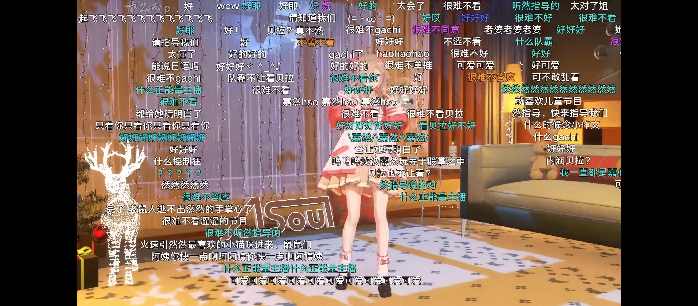

-02-
异军突起，同台竞技
“二创”与虚拟偶像
首先，二创文化在虚拟偶像中更有发挥空间。
二创即二次创作，指利用原作品的背景或人物等设定，再次创造和原作不同、或原作未展现的新的如小说、游戏作品、周边、cosplay等的创作。
作为以二次元形式存在的产物，虚拟偶像在二创上便有天然的优势。在影视创作方面，虚拟偶像许多时候的出圈创作靠的并不是本人，而是众多的切片、手书，甚至于圈内梗子。在B站（国内最大二次元网站）搜索“Asoul”，你会发现首页内容很少有官方账号发表的内容，而更多的是不熟悉的人在一起进行的“爱好盛典”。
但在传统偶像的领域，二创的发展已变得极其艰难。2021年12月，中国网络视听节目服务协会规定短视频中不可出现“未授权”影视内容。在政策的发布与老牌视频网站的夹击中，二创影视作品的生存空间极其狭窄。但对于虚拟偶像来说，不是明确的抄袭、或在原作品未禁止转载或加工时，二创的空间便是广阔而深入的。
在小说创作等方面更是如此。对于真实偶像与其粉丝无法容忍O.O.C.（out of character）等情况的出现，但对于虚拟偶像及其粉丝而言，虚拟偶像的身份更像是一种象征，把这些身份放在任何一个社会环境中都不会有太大不妥——虚拟将“人”与“身份”的剥离，真正的偶像是每天直播的偶像、而二创里的偶像是笔者幻想下的经历了奇妙故事的他们。
在图表统计中，与大部分偶像经济相同，网民们会选择支持代言以支持自己喜欢的虚拟偶像。但周边的火爆与cosplay的出现却是虚拟偶像与传统偶像经济完全不同的一点。据艾媒咨询发布，2021年虚拟偶像预计带动周边市场规模为1074.9亿元，打开淘宝搜索，光是彩虹社与Asoul两家周边消费月销量1000+店铺已超过10家；在bilibili会员购中，仅仅是预售三个月嘉然单人盒蛋便有1.1w人点击了“我想要”……还有不可计数的画册、“娃群”等其它形式的周边产生。
这种二创文化也同时也是虚拟偶像、二次元生态独特而有趣的一点；也同时是现实偶像与粉丝大多难以接受的创作现实人对于现实人的模仿、畅想甚至鬼畜被现实偶像与粉丝们认为是一种侮辱。以Asoul为例，我们可以在漫展上看见许许多多嘉心糖扮演自己心中的嘉然，却很少看到有粉丝去“扮演”自己的偶像。
其次，更加密切、亲近。观众更加重视参与感与认同感。偶像不再是“高高在上”的不可触碰之人，而是可以与观众反应互动的对话者存在。

虚拟偶像团体ASOUL正在直播，图为该团体成员嘉然
通过图表可以得知，有超过75％的网民为虚拟偶像月均消费超过200元，有超过85％的网民对虚拟偶像的消费等同于、甚至超过现实偶像。这得益于线上平台的“直播”模式。结合上一个图表，我们得知在消费人群中将近半数都会为自己喜欢的偶像进行直播打榜——仅次于支持偶像代言或周边等实物或日常消费。
直播带给观众们的是一种“陪伴感”与“真实感”。人们更是像与他们进行情感交，与只隔着一个屏幕的“人”互相交流——即使在观众所能看到的时间内，他们只是数据皮套。但深挖之下，这些数据皮套拥有自己的“中之人”，这些虚拟偶像拥有自己的情感，有自己对于观众与粉丝们的认知与反馈。这种几乎每天都在发生、并且每天都有全新内容的“偶像见面会”基于这种更加亲密关系，自然会挖空更多受众者的钱包。
由小众群体脱胎而出的虚拟偶像粉丝生态，也为更多年轻人在步入社会前提供了身份认知。出于社会同一性，粉丝群体在为虚拟偶像应援的过程中，可以获得更真切的社会身份归属感，并以此划分社交群体。同时，这种社会同一性的获得也会连接粉丝的网络活动和社交生活，弥补了虚拟偶像传播媒介的局限性，增强了受众的粘性，为虚拟偶像产业提供了更加稳定的消费。
最后，“梗文化”的产生与发展预示着观众之间的关系更加亲密，更加具有认同感，且愿意以平等的、私密的方式交流。
在虚拟偶像视频下，粉丝们用“梗表情包”来表达支持。
由数据可知，88.5％的虚拟偶像爱好者会加入社群，大部分加入社群的数量为2或3。由于在虚拟偶像爱好者中不存在“大粉丝”（即花钱多者为领导者）。每一个粉丝都只是为爱发电。这些为爱发电的人们为了追求认同感、相识更多的爱好者而相聚在一个基本无组织的集体中。比如微博超话每日签到、比如B站粉丝牌子，又比如这些大大小小的QQ群，都是他们热爱与一同走向未来的证明。
[1] 网民倾向于支持喜欢虚拟偶像周边形式： 整理自艾媒数据中心、观研报告网综合数据。
[2] 网民为虚拟偶像月平均消费金额（元）： 整理自艾媒数据中心公开报告。
[3] 虚拟偶像爱好者加入社团比例：整理自艾媒数据中心公开报告。
本页中互动图表生成采用了开源项目Echarts。